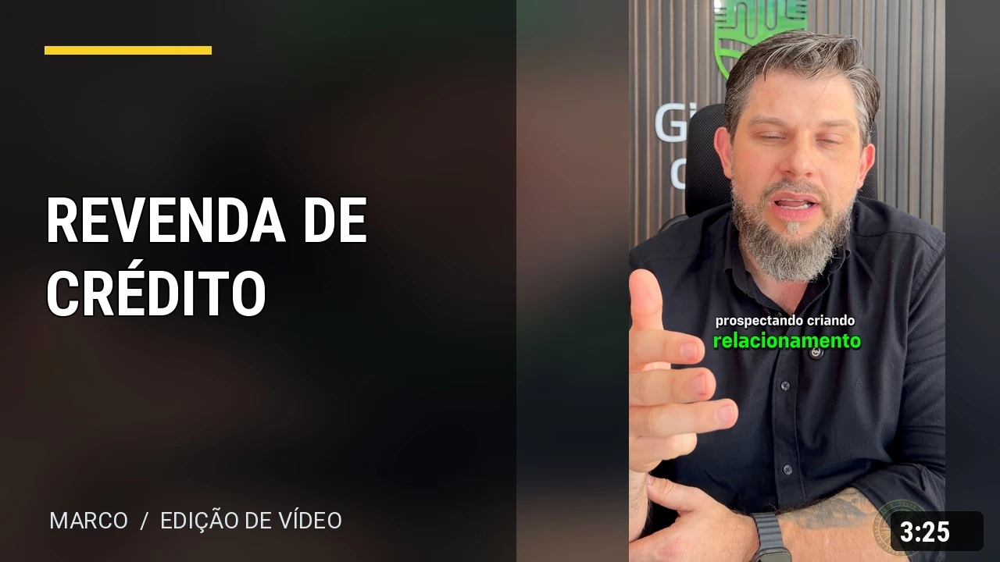
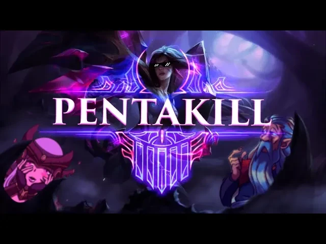
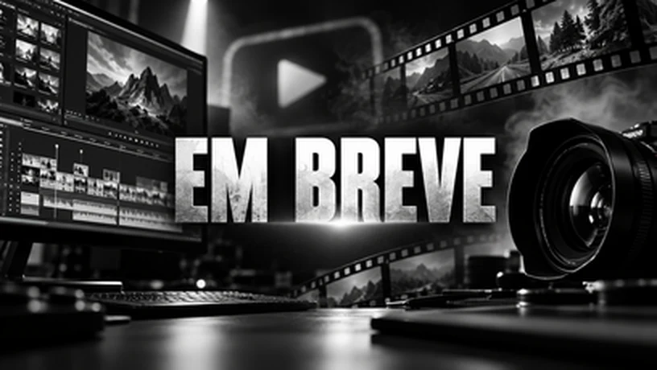

3:25▶Marco “de pantufas” Walker
✓@marcothewalker• Editor de vídeo • 3 projetos em destaque
Edição de vídeo, conteúdo para redes sociais e criatividade em cada frame.
Mais informações sobre mim ›SELEÇÃO DE TRABALHOS / 2026
3 trabalhosVídeos
PARA YOUTUBE▶

8:07▶AQUELE TRIO CRIMINOSO! ft. Piople e Cafeína
Marco de Pantufas
Gameplay • League of Legends • Canal próprio

PRÓXIMA ESTREIANovos projetos em breve
Marco de Pantufas
Espaço reservado para próximos trabalhos
Nenhum vídeo nesta categoria por enquanto
Novos trabalhos aparecerão aqui conforme forem publicados.
POR TRÁS DE CADA FRAME
Vamos conversar ↗Histórias que prendem a atenção.
Do material bruto à versão final, cada trabalho é pensado para comunicar uma ideia com clareza e personalidade.